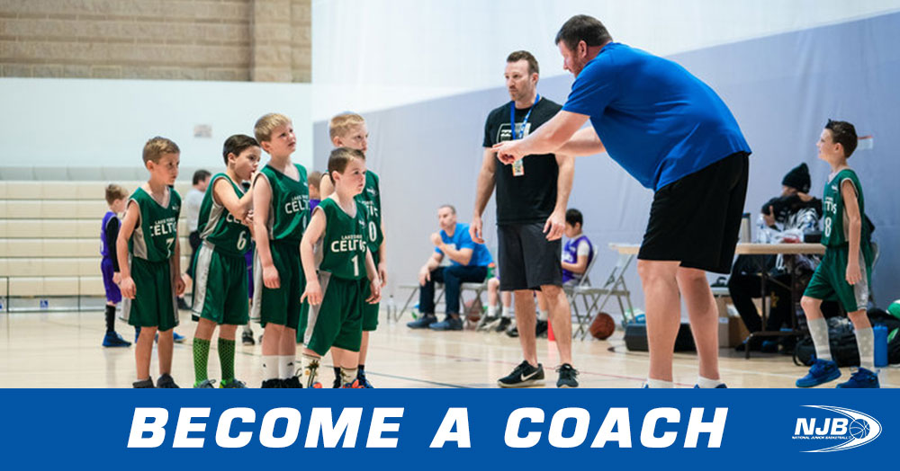
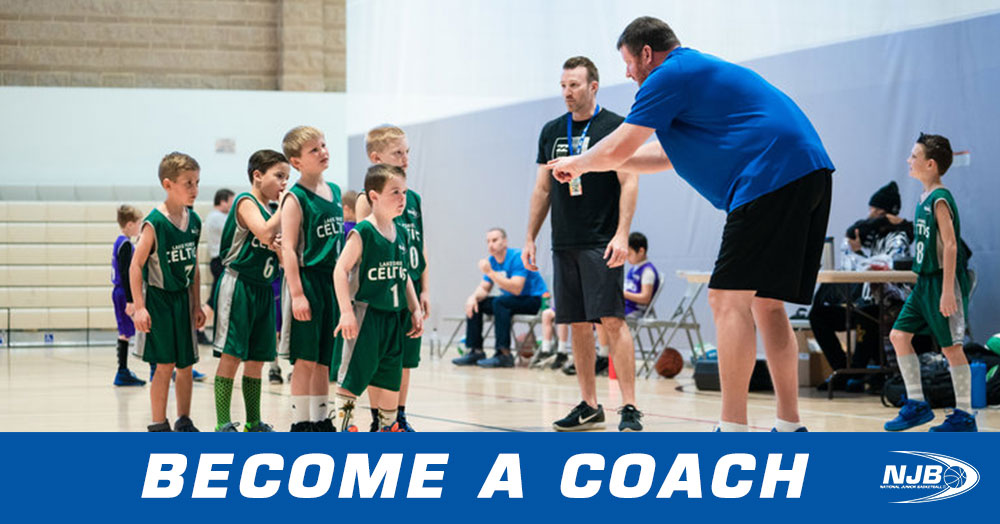

John Doe
Pre-business major
My name is Nathaniel Cardenas. Currently a freshman majoring in Pre-business at the University of California Riverside. While I am still young, I have experience in both the workforce as well as the entrepreneurial fields. A biography is simply an account of someone’s life written by another person. A biography can be short in the case of few sentences biography, and it can also be long enough to fill an entire book. The short biographies explain a person’s basic life facts and their importance, but the long biographies would go an extra mile and include more details to make an interesting read. You may find yourself in a situation which requires you to write a biography of a famous person, a close friend or a relative. For this reason, it pays to know how to come up with a biography and the important details that you should include in it. The lives of many people have interesting bits of information, but you ought to know what to capture in the biography and what to leave out. A biography is simply an account of someone’s life written by another person. A biography can be short in the case of few sentences biography, and it can also be long enough to fill an entire book. The short biographies explain a person’s basic life facts and their importance, but the long biographies would go an extra mile and include more details to make an interesting read. You may find yourself in a situation which requires you to write a biography of a famous person, a close friend or a relative. For this reason, it pays to know how to come up with a biography and the important details that you should include in it.
The lives of many people have interesting bits of information, but you ought to know what to capture in the biography and what to leave out. A biography is simply an account of someone’s life written by another person. A biography can be short in the case of few sentences biography, and it can also be long enough to fill an entire book. The short biographies explain a person’s basic life facts and their importance, but the long biographies would go an extra mile and include more details to make an interesting read. You may find yourself in a situation which requires you to write a biography of a famous person, a close friend or a relative. For this reason, it pays to know how to come up with a biography and the important details that you should include in it. The lives of many people have interesting bits of information, but you ought to know what to capture in the biography and what to leave out.in a situation which requires you to write a biography of a famous person, a close friend or a relative. For this reason, it pays to know how to come up with a biography and the important details that you should include in.
Experience
Tutor
• Taught both Math and English X
• Created schedules
• Experienced in time management, teaching and patience
Basketball Coach
• Coached grades 4th-5th in the game of basketball
• Became league champs
• Helped students become more active and healthy through basketball
• Developed a good sense of connecting with parents and etc
Education
University of California Riverside
Portfolio


